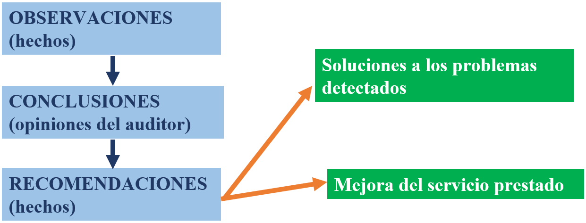

1. Identificación del Informe
2. Identificación del cliente
3. Identificación de la entidad auditada
4. Objetivos de la auditoría informática
- Declaración de los objetivos para identificar propósito.
- Si algún objetivo no fue satisfecho, éste hecho debe notificarse en el reporte.
5. Normativa aplicada y excepciones
- Identificación de normas legales utilizadas, excepciones de uso y el posible impacto de los resultados de la auditoría.
6. Alcance de la Auditoría
- Naturaleza y extensión del trabajo realizado
- Identificación del área de auditoría y el período cubierto
- Sistemas de información, aplicaciones o ambiente revisado
- Limitaciones al alcance
- Restricciones del auditado
7. Conclusiones
Es la evaluación del área auditada
- Debe contener uno de los siguientes tipos de opinión: favorable, con salvedades, desfavorable, denegada
- Se deben expresar recomendaciones para acciones correctivas.
8. Recomendaciones
- Debe surgir de forma lógica de las observaciones y conclusiones que se han recogido en el informe.